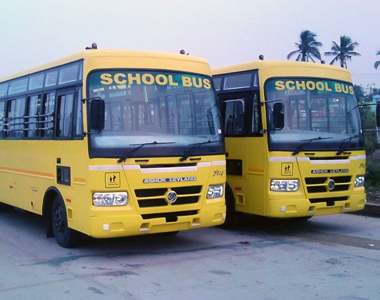
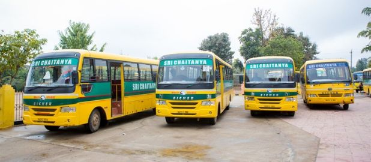

SRI CHAITANYA JUNIOR COLLEGE
Gudavalli,Vijaywada
Home
Services
Buses
Fee details
Contact us
We pay close attention to the travel safety of our students. With a fleet of buses with 40 seats each, we ensure every student gets comfortable seating during their journey. Our buses meet all the required government regulation standards and have well-trained drivers who take care of pick-ups and drops on the assigned routes. We also have bus attenders who look after the students and take care of seating arrangements.


The growth of Sri Chaitanya – post 1986, has been phenomenal and part of folk-lore. A Boys’ Junior college(1991), branches in Hyderabad (1996), Visakhapatnam (1998), Tirupathi and Guntur (2000), Eluru, Bhimavaram, Rajahmundhry, Kakinada and Machilipatnam (2002), Tenali, Ongloe, Srikakulam, Amalapuram, Chittoor, Nellore and Ananthapur (2003) in Andhra Pradesh.
Sri Chaitanya continued its march forward by stepping beyond the state. Branches were opened in Delhi (2004), Hamirpur-Himachal Pradesh (2005) and Bellary – Karnataka. In 2006, the institution opened IIT-JEE / AIEEE / PMT Coaching Centres at Mandi-Himachal Pradesh, Ranchi and Bokaro – Jarkhand and Indore Madhya Pradesh. The Group continued its march forward with the inception of Sri Chaitanya Techno Schools in various districts of AP in 2008, and expanding to cover fourteen districts of the state and 3 districts of Karnataka including four branches in Bangalore by 2011.